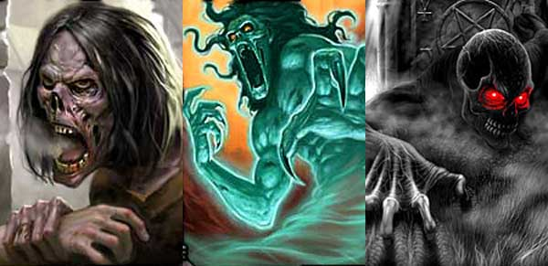

Il risucchio di energia vitale è un pericolosissimo effetto prodotto principalmente dal tocco di pericolosi non-morti (in rari casi da altre creature e da incantesimi necromantici). Le seguenti regole sostituiscono interamente il risucchio di livelli di esperienza mentre non sostituiscono altre tipologie particolari di risucchio.
Ogni essere vivente la cui essenza si basa sull'energia positiva (come tutte le creature originarie del primo piano materiale) è dotato di una certa energia vitale. L'energia vitale rappresenta quel determinato ammontare di energia positiva che permette la vita e dona vigore al corpo delle creature viventi. Orbene, alcuni pericolosi esseri sono in grado di causare, oltre ai normali danni, una perdita di energia vitale nelle loro vittime. Perdere energia vitale rappresenta un gravissimo pericolo per gli essere viventi la cui essenza si basa sull'energia positiva, ciò per almeno due ragioni. Accumulare energia vitale è un processo progressivo e lentissimo che inizia con la nascita della creatura e prosegue lentamente durante la sua crescita, inoltre, la fuoriuscita improvvisa di energia vitale dal corpo di una creatura è un evento traumatico che può avere conseguenze permanenti devastanti ed a volte letali.
Ogni volta che una creatura è colpita da un attacco in grado di provocare il risucchio di energia vitale lo stesso accumulerà immediatamente un ammontare di punti definiti "lesioni all'energia vitale" pari alla forza del risucchio (nella normalità dei casi il risucchio provoca una sola lesione ma alcune potenti creature sono in grado di provocare più di una lesione con ogni singolo colpo inferto). In ogni caso una creatura può accumulare un ammontare massimo pari a 19 punti "lesioni all'energia vitale".
Il risucchio può provocare effetti immediati e temporanei causati dalla traumatica fuoriuscita di energia vitale nonché pericolosissimi effetti permanenti.
EFFETTI TEMPORANEI DEL RISUCCHIO DI ENERGIA VITALE
La perdita di energia vitale è oltremodo dolorosa, per tale motivo ogni volta che una creatura subisce un singolo risucchio di energia vitale la stessa dovrà effettuare un tiro salvezza su robustezza al quale sarà applicata una penalità pari a -5% per ogni punto "lesione all'energia vitale" subito complessivamente dalla vittima fino a quel momento (senza considerare, però, quello dovuto all'attacco). Si noti che a questo tiro salvezza non è applicato il modificatore dovuto alla differenza di dadi vita/livello tra la vittima e chi ha effettuato il risucchio. Qualora il tiro salvezza fallisce il trauma provocato dalla fuoriuscita di energia vitale dalla creatura le farà perdere tutte le successive azione del round e la stessa sarà considerata incapacitata (incapacitated, vedi link) per tutto il round successivo a quello del risucchio. Le creature immuni al dolore sono immuni all'effetto temporaneo del risucchio di energia vitale. Le creature dotate della competenza Pain Tollerance che riescono in una prova nella stessa ottengono un bonus del +5% al suddetto tiro salvezza.
EFFETTI PERMANENTI DEL RISUCCHIO DI ENERGIA VITALE
Immediatamente dopo aver accumulato una certa lesione all'energia vitale dovrà verificarsi se la perdita di energia vitale abbia provocato per la creatura un effetto permanente sul proprio fisico. Per tale motivo la vittima dovrà tirare 1d20. Se il risultato del tiro è superiore all'ammontare totale di punti "lesioni all'energia vitale" totali accumulati dalla creatura (ossia dall'ammontare totale di punti accumulati con tutti i precedenti risucchi di energia vitale subiti) la stessa non avrà subito conseguenze permanenti, se invece il risultato del tiro è pari od inferiore all'ammontare totale delle lesioni all'energia vitale accumulate dalla creatura la stessa subirà un devastante effetto permanente. Si noti che per ogni singolo risucchio subito dovrà effettuarsi un tiro (indipendentemente dall'ammontare di punti "lesioni all'energia vitale" che tale risucchio fa accumulare). Quando si verifica un effetto permanente si tiri sulla seguente tabella per determinare l'esatto effetto subito dalla creatura (si noti che tutti gli effetti tranne quelli previsti dal numero 7 in poi possono essere cumulati più volti sulla stessa creatura).
1
Indebolimento vitale - La creatura perde permanente di 3 punti ferita
[1].
2 Indebolimento vitale - La creatura
perde permanente di 6 punti ferita
[1].
3 Indebolimento vitale - La creatura
perde permanente di 9 punti ferita
[1].
4 Indebolimento fisico - La creatura
perde permanente di 1 punto di forza (se creatura mostruosa perde un punto di
Thac0).
5 Indebolimento fisico - La creatura
perde permanente di 1 punto di costituzione (se creatura mostruosa perde un
punto ferita per Dado Vita).
6 Indebolimento fisico - La
creatura perde permanente di 1 punto di destrezza (se creatura mostruosa perde
un punto di Classe Armatura).
7 Affaticamento vitale - La
creatura subisce permanentemente una grave forma di stanchezza
[2].
8 Perdita di fluido vitale - La
creatura subisce permanentemente gli effetti di una grave anemia
[3].
9 Perdita vitalità e reattività -
La creatura cade permanentemente in una grave forma di apatia
[4].
10 Perdita della scintilla vitale - La
creatura muore istantaneamente e non può essere resuscitata con l'utilizzo degli
incantesimi di raise dead e di resurrection.
[1] Se l'ammontare di punti ferita totali della creatura risulta inferiore ad 1 la stessa morirà come se fosse uscito un risultato pari a 10. Se, invece, la creatura muore per la perdita di punti ferita ma qualora fosse sana al pieno dei suoi punti ferita gli stessi risulterebbero superiori ad 1 la creatura sarà morta comunemente.
[2]
La creatura subisce permanentemente una cronica forma di stanchezza sia fisica
che mentale. Per tale motivo la stessa accumulerà un ammontare doppio dei punti
fatica rispetto al solito e recupererà sempre e comunque un unico punto magia
all'ora per il riposo (anche in caso di riposo totale). Questo effetto non può
essere curato con la magia di Cure Disease.
Questo
effetto può essere subito una sola volta, per tale motivo qualora una creatura
che sta già subendo questo effetto sulla sua persona effettui nuovamente questo
risultato la stessa dovrà tirare nuovamente.
[3]
La creatura diventa immediatamente anemica e il proprio fisico non produce più
un adeguato ammontare di fluido corporeo. Per tale motivo, da questo momento in
poi, la stessa subirà il 150% dei danni da taglio o da punta (arrotondati per
difetto), inoltre la stessa
avvertirà freddo internamente subendo una penalità di -1 a tutti i suoi tiri per
colpire nonché una penalità di -1 ai danni provocati utilizzando armi da corpo a
corpo e da lancio. Questo effetto non può essere curato con la magia di Cure
Disease.
Questo effetto può essere subito una sola volta, per tale motivo qualora una
creatura che sta già subendo questo effetto sulla sua persona effettui
nuovamente questo risultato la stessa dovrà tirare nuovamente.
[4]
La creatura cade immediatamente
e permanentemente in una grave forma di apatia. La sua reattività cala e sul suo
viso aleggia un alone grigio di tristezza. L'apatia è caratterizzata da assenza
di reazioni emotive e da inerzia fisica. Per tale motivo il personaggio subisce
costantemente una penalità di +2 all'iniziativa, una penalità di -3 a tutti i
tiri sulla sorpresa, una penalità di +2 a tutte le prove di destrezza ed una
penalità di -1 alla sua Classe Armatura. Questo
effetto non può essere curato con la magia di Cure Disease.
Questo
effetto può essere subito una sola volta, per tale motivo qualora una creatura
che sta già subendo questo effetto sulla sua persona effettui nuovamente questo
risultato la stessa dovrà tirare nuovamente.
Una magia di Restoration (incantesimo dei chierici del 7° livello di potere) è in grado di curare un singolo effetto negativo subito dalla creatura (ad eccezione del nefasto esito mortale), qualora la creatura abbia subito più di un effetto negativo sarà la stessa a poter determinare quale singolo effetto rimuovere con la magia. Anche l'incantamento minore Salt of Life di Eram può provare a rigenerare uno di questi effetti negativi subiti.
LA CURA DELLE LESIONI ALL'ENERGIA VITALE
Una volta subita un risucchio di energia, indipendentemente dai suoi esiti nefasti, la creatura accumula punti "lesioni all'energia vitale". Queste lesioni all'energia vitale possono essere recuperate solo con lo scorrere del tempo e non senza difficoltà. Per poter recuperare energia vitale occorre che la creatura si dedichi interamente al riposo e alla cura del suo corpo e del suo spirito per un periodo consecutivo di giorni pari ad un mese. In questo periodo la creatura non potrà effettuare alcun tipo di attività (sarà inibito anche viaggiare, gestire attività economiche, studiare, allenarsi ed insegnare). Inoltre, la creatura dovrà vivere agiatamente e comodamente usufruendo di pasti regolari.
Alla fine del mese di
riposo la creatura potrà effettuare un tiro salvezza su robustezza applicando i
seguenti modificatori:
Se la creatura vuole
annullare dal 1° al 2° dei punti "lesioni
all'energia vitale" accumulati -
Penalità di -25%
Se la creatura vuole
annullare dal 3° al 4° dei punti "lesioni
all'energia vitale" accumulati -
Penalità di -20%
Se la creatura vuole
annullare dal 5° al 6° dei punti "lesioni
all'energia vitale" accumulati -
Penalità di -15%
Se la creatura vuole annullare dal 7° all'8° dei punti "lesioni
all'energia vitale" accumulati -
Penalità di -10%
Se la creatura vuole annullare dal 9° al 10° dei punti "lesioni
all'energia vitale" accumulati -
Penalità di -5%
Se la creatura vuole annullare dall'11° in poi dei punti "lesioni
all'energia vitale" accumulati -
Nessuna Penalità
Se la creatura si procura ed utilizza un Filtro di
Purificazione (link)
- Bonus di +5%
Solo qualora la prova ha successo la
creatura potrà recuperare una parte di energia vitale annullando un unico punto
"lesioni all'energia vitale" fino ad allora
accumulato.
Si noti che esistono dei metodi magici per curare le lesioni all'energia vitale.
Si consideri ad esempio l'incantamento minore
Salt of Life
di Eram.